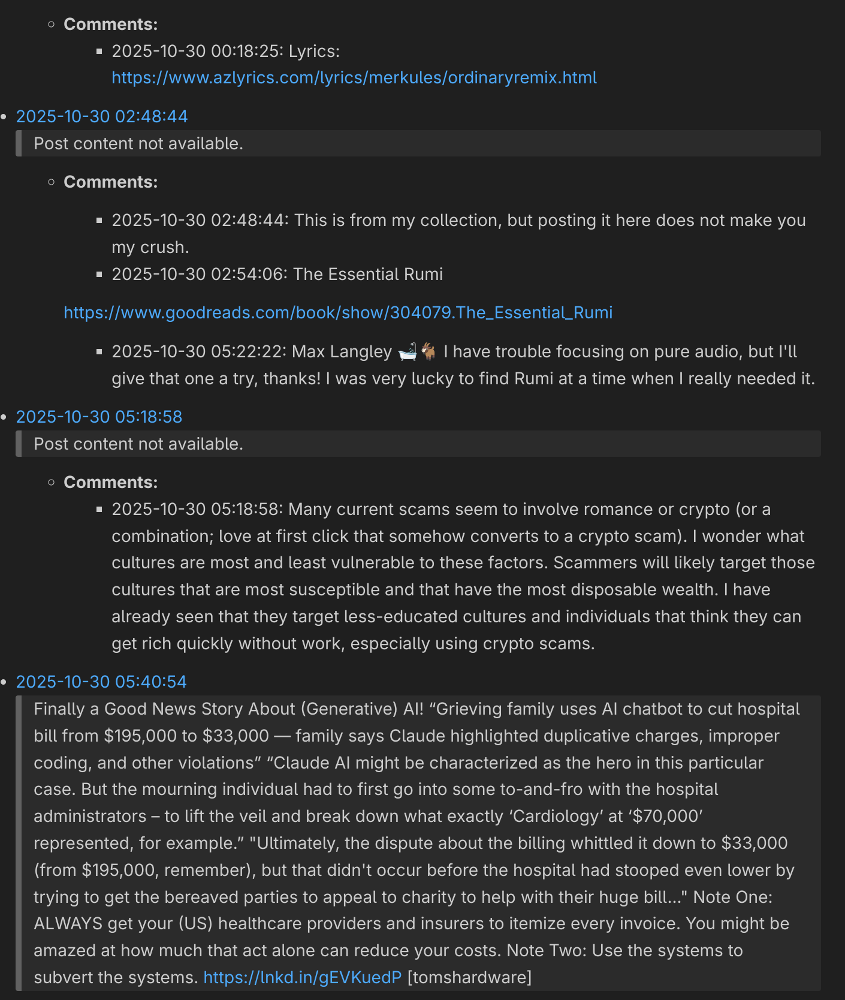

Format Your Old LinkedIn Content
This article explains how you can make your old content on LinkedIn more accessible. If you have posted a lot to LinkedIn, it can be very difficult to locate your old posts. The approach described in this article provides a potential workaround.
Last month I wrote about how you can access your old content on LinkedIn:
Basically, you use their UI to export it to Comma-Separated Values (CSV) files. That's functional, but not very usable, especially because LinkedIn doesn't encode CSV files correctly. You can have an AI analyze that content:
To format the content, you can run the files through an AI to generate markdown, HTML, JSON, or whatever format you need. Most people might like a static HTML best, since then you don't need a tool to visualize markdown; you can just open the file in a browser.
One caveat is that the export does not include media. The LinkedIn media export feature has been "under construction" for a couple of decades. Another is that formatting is not great, specifically around linefeeds, but there are probably some instructions I could give to address some of that. And some URLS are LinkedIn Klingon-cloaked so they can ensure your online safety. And by that I mean track you better. And usernames are not clickable. And there are no preview cards for YouTube and such. And you only see your content, including your posts and comments, not the posts you commented on or the comments to which you responded.
Below are the instructions that I used to generate the sample that appears in this page.
Claude prevented me from uploading CSV files. I appended .txt extensions to the file names, which Claude allowed me to upload. But by then I had run out of free credit for today. I had also run out of free credit on ChatGPT. I signed up for a free month of gemini, but I'm already disappointed, because it is easily confused (AI lacks common sense), and the UI was quirky today. It helped to give it instructions first and then upload the files afterwards. It doesn't let me download markdown files (it links to something like sandbox:/mnt/data/filename.md and blames my UI, which is google gemini running in google's chrome browser), and there's a limit to how much it can render inline, which is also very slow.
Anyway, here are my approximate prompts that I used:
These CSV files do not seem to be encoded, quoted, or escaped perfectly. Please correct any errors in the files before proceeding.
Shares.csv lists posts. Comments.csv lists comments on posts. Every comment is always associated with a post, but for some comments, there is no post record in the shares CSV. In both files, the URL may identify the post.
Generate a markdown file that I can download. If possible, I want a bulleted list with an entry for each post, including all the comments associated with that post. Each entry should include a link to the post. Use the datestamp as the text of the link. Order the list so that the oldest posts come first.
It generated the output below.
I asked it to generate code that would let me do this locally, which seems to work. After some improvements, the script is here:
My LinkedIn post and comment history is here:
AI Session
This is a link to the relevent AI session:
Comments
You can comment here:
Sample Output
Here's my partial data that gemini was able to give me.
- 2025-10-23 09:14:58
And I thought interactions here on LinkedIn couldn't possibly drop lower. Maybe slop will drop now? Nah... https://lnkd.in/gvHTVxwW
- 2025-10-23 10:45:20
Post content not available.
- Comments:
- 2025-10-23 10:45:20: My experience in Laos has been that it is surprisingly variable, maybe depending on the production date, age, time spent in the sun, and so forth. I have had some good bottles and pints out of decent kegs, but don't drink it if I can avoid it. Beer Lao green (supposedly made with a single origin rice) has less alcohol and was good for a while but then seemed to become inconsistent. There are some other varieties I haven't tried. Given the option, I'll take Nam Khong or a Japanese beer over Beer Lao.
- Comments:
- 2025-10-24 01:05:06
Post content not available.
- Comments:
- 2025-10-24 01:05:06: Instant meditation
- Comments:
- 2025-10-24 02:28:03
Post content not available.
-
Comments:
- 2025-10-24 02:28:03: I'm all ears...
- 2025-10-24 04:40:19: Dražen Janjiček I live across the river and I'm afraid to visit Myanmar, though I don't expect to be kidnapped or fall for the "job opportunity" scam.
From what I've seen, Myanmar "rebel" forces appear to have joined the Chinese government in this fraud effort, although I'm certain it's much bigger than that.
There are people rescuing the slaves, but that presents significant risks, and the scale is huge.
-
- 2025-10-24 08:02:41
Post content not available.
-
Comments:
- 2025-10-24 08:02:41: Good morning!
Alternate soundtrack: https://youtu.be/9UY1seXdnIc?list=RD9UY1seXdnIc
There may be trouble ahead But while there's music and moonlight (moonlight and music) and love and romance Let's face the music and dance Before the fiddlers have fled, Before they ask us to pay the bill, and while we still have that chance Let's face the music and dance Soon, we'll be without the moon, humming a different tune - and then... There may be teardrops to shed So (But) while there's music and moonlight (moonlight and music) and love and romance (Let's face the music and dance, dance) (Let's face the music - let's here that music) Let's face the music and dance
-
- 2025-10-24 13:35:55
Post content not available.
- Comments:
- 2025-10-24 13:35:55: Good episode: https://youtu.be/rlR8d9JVWtQ
- Comments:
- 2025-10-24 13:49:20
Post content not available.
-
Comments:
- 2025-10-24 13:49:20: How many drugstore cowgirls, Max? I've had my share. I do, I don't, whatever. People need to get the axing.
-
- 2025-10-24 13:57:34
Post content not available.
- Comments:
- 2025-10-24 13:57:34: I read that they're dumping old staff and keeping the expensive new talent. Place your bets.
- Comments:
- 2025-10-24 14:14:13
Post content not available.
- Comments:
- 2025-10-24 14:14:13: Stephen has a face for radio, a voice for print, and a car for turo.
- Comments:
- 2025-10-25 01:21:37
Post content not available.
- Comments:
- 2025-10-25 01:21:37: Using it as some type of fuel supplement? Or still just a bunch of worthless drunk peasant alcoholics, now facing increasing depression?
- Comments:
- 2025-10-25 02:51:25
Post content not available.
- Comments:
- 2025-10-25 02:51:25: Centigrade
- Comments:
- 2025-10-25 03:02:40
Post content not available.
-
Comments:
- 2025-10-25 03:02:40: It will only drive on apple roads, which have high fees. Changing tires will not be possible. Seats cost extra.
- 2025-10-25 04:25:30: Derek da Costa And apple will take 30% of the electricity price.
- 2025-10-25 04:38:57: Derek da Costa
In 2025, products only exist to drive share prices, and technology has become the worst product.
- 2025-10-25 04:50:33: Derek da Costa
Oh, but you should hear the US right rant about socialism with no understanding of what it actually is! And Communism as if it actually ever existed! They also seem to have no understanding of the impacts of unbridled capitalism, regardless of constant current events demonstrating the downsides.
What I really don't understand is why they think billionaires and corporations shouldn't pay a reasonable share of taxes, but that wealth should instead funnel upwards from labor to the billionaires. They also don't seem to realize that people will contribute to society and the economy regardless of financial factors. In fact, many would contribute more if they could do what they enjoy.
I think the answers are ignorance, brainwashing, and some form of greed and desire to exclude, to look down on others even though they are close to the bottom.
-
- 2025-10-26 00:30:17
I would like my money back.
- 2025-10-26 01:39:42
Post content not available.
-
Comments:
- 2025-10-26 01:39:42: Utku Karaaslan
I feel his pain.
https://www.youtube.com/watch?v=fVuSYUNAekc1
- 2025-10-27 01:56:09: Matthew Donovan I would take any decade before this one.
-
- 2025-10-26 02:43:43
Post content not available.
- Comments:
- 2025-10-26 02:43:43: This is not the worst of what Metalocalypse can do to a man.
- Comments:
- 2025-10-26 04:09:41
Post content not available.
- Comments:
- 2025-10-26 04:09:41: Not counting internal infrastructure?
- Comments:
- 2025-10-26 09:02:30
Post content not available.
- Comments:
- 2025-10-26 09:02:30: Who could ask for more?
- Comments:
- 2025-10-27 01:36:13
Post content not available.
-
Comments:
- 2025-10-27 01:36:13: "Dad, why do we consider numbers on computers to be wealth?"
- 2025-10-27 02:56:54: It's somewhat frightening that our entire financial/social system is built on fostering greed and consumption.
Your writing reminded me of this scrap I wrote once. We're all slaves in this system and most of us don't even realize it.
Borrowing money we don't have to buy things we don't need to impress people we don't know without ever achieving true happiness.
-
- 2025-10-27 02:49:32
Blogged: VSCodium: Easily Open Files in External Applications This blog post explains how you can use the Open in External App extension for Microsoft Visual Studio Code and open source VSCodium to open files in external applications rather than the Visual Studio Code or VSCodium text editor. https://lnkd.in/gJU8DsTy
- 2025-10-27 03:03:50
Post content not available.
- Comments:
- 2025-10-27 03:03:50: Removable faceplate?
- Comments:
- 2025-10-27 04:29:09
Post content not available.
-
Comments:
- 2025-10-27 04:29:09: Soundtrack: https://youtu.be/TjvvK-Rj0WI
From the cradle bars Comes a beckoning voice It sends you spinning You have no choice
You hear laughter Cracking through the walls It sends you spinning You have no choice
Following the footsteps Of a rag doll dance We are entranced Spellbound
And don't forget when your elders forget To say their prayers Take them by the legs And throw them down the stairs
When you think your toys Have gone berserk It's an illusion You cannot shirk
-
- 2025-10-27 04:45:32
Post content not available.
- Comments:
- 2025-10-28 15:50:58
Gold is the primary path to hell.
- 2025-10-30 00:18:25
Post content not available.
- Comments:
- 2025-10-30 00:18:25: Lyrics: https://www.azlyrics.com/lyrics/merkules/ordinaryremix.html
- Comments:
- 2025-10-30 02:48:44
Post content not available.
-
Comments:
- 2025-10-30 02:48:44: This is from my collection, but posting it here does not make you my crush.
- 2025-10-30 02:54:06: The Essential Rumi
https://www.goodreads.com/book/show/304079.The_Essential_Rumi
- 2025-10-30 05:22:22: Max Langley 🛁🐐 I have trouble focusing on pure audio, but I'll give that one a try, thanks! I was very lucky to find Rumi at a time when I really needed it.
-
- 2025-10-30 05:18:58
Post content not available.
- Comments:
- 2025-10-30 05:18:58: Many current scams seem to involve romance or crypto (or a combination; love at first click that somehow converts to a crypto scam). I wonder what cultures are most and least vulnerable to these factors. Scammers will likely target those cultures that are most susceptible and that have the most disposable wealth. I have already seen that they target less-educated cultures and individuals that think they can get rich quickly without work, especially using crypto scams.
- Comments:
- 2025-10-30 05:40:54
Finally a Good News Story About (Generative) AI! "Grieving family uses AI chatbot to cut hospital bill from $195,000 to $33,000 -- family says Claude highlighted duplicative charges, improper coding, and other violations" "Claude AI might be characterized as the hero in this particular case. But the mourning individual had to first go into some to-and-fro with the hospital administrators - to lift the veil and break down what exactly 'Cardiology' at '$70,000' represented, for example." "Ultimately, the dispute about the billing whittled it down to $33,000 (from $195,000, remember), but that didn't occur before the hospital had stooped even lower by trying to get the bereaved parties to appeal to charity to help with their huge bill..." Note One: ALWAYS get your (US) healthcare providers and insurers to itemize every invoice. You might be amazed at how much that act alone can reduce your costs. Note Two: Use the systems to subvert the systems. https://lnkd.in/gEVKuedP [tomshardware]
- 2025-10-30 10:54:32
Post content not available.
-
Comments:
- 2025-10-30 10:54:32: Rodrigo Peplau
I had a motorcycle accident in Laos this month that involved ambulance service, several nights in hospitals, bandages, surgery, casts, prescription medicines, periodic check-ups and wound cleanings, all with incredible friendly service by literally dozens of people. Not only that, but everyone recognizes it as an accident rather than trying to assign blame - no risk of lawsuit by any party.
The last time that I tried billing my US insurer for an ultrasound of my shoulder in Singapore, I got a runaround for months and eventually gave up (which is certainly their goal), and that was with the company where my wife at the time worked.
I'll try billing my US insurer, but I'm relatively confident they won't pay. It doesn't matter though - what I'll pay out of pocket for this entire experience is LESS THAN what I would pay with insurance in the USA due to deductibles and other workarounds to providing care under insurance. I'll probably let my US health insurance expire this year and get a Thai/travel plan instead, since I basically live here now anyway.
Many Americans already live in permanent medical debt, and a minor injury or sickness (let alone a long-term illness) for others can bankrupt a family.
- 2025-10-30 11:41:45: Rodrigo Peplau
I get the stitches out in a week, then the pins for the broken toes in two more weeks. It's not painful, just annoying that I can't get around, swim or ride a bike. I'll be back on the motorbike ASAP.
My ex-wife has worked in US healthcare IT for 20+ years. The incredibly wasteful bureaucracy consumes more than half the financial resources without providing any care and actually thinks it adds value, but really it's mostly just fiefdoms of office workers. AI may cost some jobs and make common care worse.
I describe her place of work as something like the McDonald's of healthcare - try to serve each client with the least healthy option in the least time possible at the greatest cost, generally by offering an addictive prescription instead of care. Big pharma is certainly part of the problem, but a profit-driven society is really the root cause.
At an optometrist in Canada, the service was basically immediate and the bill was incredibly low. I've had two other medical emergencies in Thailand and been amazed at the friendliness, speed, and quality of care at almost no cost.
Americans reject anything that sounds like socialism without any understanding of what it actually is.
-
- 2025-10-30 11:28:15
Post content not available.
- Comments:
- 2025-10-30 11:28:15: All I do is rant It gives me purpose in life I don't have a point
- Comments:
- 2025-10-30 12:29:09
Post content not available.
- Comments:
- 2025-10-30 12:29:09: Benny S. Try repricing oil in any currency other than dollars and see what happens.
- 2025-10-30 18:33:17: Benny S. I understand. I was trying to make a separate point. One speculated reason for the second US invasion of Iraq (which certainly wasn't weapons of mass destruction) is Saddam Hussein's decision to price the country's oil in Euros, which could have been a significant threat to the US dollar and resulting power.
- Comments:
- 2025-10-30 15:50:04
Post content not available.
- Comments:
- 2025-10-30 15:50:04: Baking soda and hydrogen peroxide.
- Comments:
- 2025-10-30 20:44:57
Post content not available.
- Comments:
- 2025-10-30 20:44:57: At a restaurant in Laos the other night, the next table had three adults, two children, and seven screens. Not a word was spoken by anyone.
- Comments:
- 2025-10-30 21:25:34
Post content not available.
- Comments:
- 2025-10-30 21:25:34: 42
- Comments:
- 2025-10-30 21:52:09
Post content not available.
- Comments:
- 2025-10-30 21:52:09: I have noticed that a lot of bought/fake accounts here use a letter instead of a last name.
- Comments:
- 2025-10-30 23:38:25
Post content not available.
- Comments:
- 2025-10-30 23:38:25: Needs more magnets in the front.
- Comments:
- 2025-10-31 05:29:15
Post content not available.
- Comments:
- 2025-10-31 05:29:15: Man up. Grow a pair. Boys don't cry.
- Comments:
- 2025-11-01 00:12:13
Post content not available.
- Comments:
- 2025-11-01 00:12:13: I agree in general and about the pandemic, but for me and I think at least many Americans, the Trump administration has made 2025 feel longer than my entire previous life. I guess I just take it all too seriously.
- Comments:
- 2025-11-01 03:51:32
Post content not available.
-
Comments:
- 2025-11-01 03:51:32: Can you provide any numbers to support your claim? What amount of money do "dems" want to allocate for this migrant healthcare, food, and housing, and what amount of money do "dems" want to hold back from vets? Because you're wrong about this.
- 2025-11-01 04:23:29: Arthur Rubin Where did you get this number? I am looking for evidence to support claims from either side, because both seem to be misleading.
Even the completely made up $200 billion for health number seems to be over ten years, and that's not for undocumented immigrants.
"Can 'illegal immigrants' get federally funded health care? No. But some immigrants here legally were among those who lost access in the Republican bill. Democrats want to restore Medicaid and marketplace access to where they were at the start of the summer, to a time when millions more Americans, and some lawful immigrants, could qualify."
- 2025-11-01 04:43:17: Arthur Rubin I can't find any facts to back up this claim. Even this says "and other non-citizens", which includes a large number of people that are in the country legally.
This "illegals" hateword is really a problem.
I know that things add up, but $20B yearly is basically meaningless relative to the overall US budget (military > $800B, snap > $100B).
-
- 2025-11-01 03:56:06
Post content not available.
- Comments:
- 2025-11-01 03:56:06: It's a dog-shank-dog world out there.
- Comments:
- 2025-11-01 04:04:08
Post content not available.
- Comments:
- 2025-11-01 04:04:08: In my experience, the USA contains an incredible number of extremely intelligent people. These stats must be based on averages, which would make sense because the USA obviously also contains a huge proportion of unbelievably and intentionally ignorant people.
- Comments:
- 2025-11-01 05:27:15
Post content not available.
- Comments:
- 2025-11-01 05:27:15: In this epic battle between the two biggest LinkedIn legends of 2025, who will score the winning moves? Who will cause the other complete and devastating defeat at the hands of their greatest arch-nemesis? Will the superior strategy be to prepare by stealing the most memes, or by generating the most ridiculously self-flattering and vainglorious imagery? Who will throw the thickest beats and fastest freestyle flows? Whose mother will absorb more damaging insults to live in permanent humiliation and infamy online?
- Comments:
- 2025-11-01 06:01:19
Post content not available.
- Comments:
- 2025-11-01 06:01:19: What is the penalty for a successful attempt though?
- 2025-11-01 22:57:07: Dražen Janjiček It's pretty easy to provide zero bandwidth at no cost.
- Comments:
- 2025-11-01 06:49:18
Post content not available.
-
Comments:
- 2025-11-01 06:49:18: Do you have any evidence to support this claim? Republican administrations always maximize national debt for billionaire advantage.
- 2025-11-01 11:31:40: Brian Kourofsky 1/2?
I didn't write anything about any bill. Of course I'd didn't read it but I have read about it, more focused on policy than finances. From what I have seen, the Trump administration will significantly increase the debt.
Historically, republican administrations have added more to the debt than democratic administrations. That's just a fact. Much of current policy does not seem to be focussed on significantly reducing the debt, but instead on increasing wealth disparity between the rich and poor, and on various cultural impacts.
I'm extremely financially conservative. I have no personal debt and live a meager lifestyle. I don't believe in borrowing money, though it can be necessary in cases of extreme need, which shouldn't really benefit others. I think it's reprehensible that recent generations have left so much debt for future generations and continue to expect government entitlements.
I don't earn tips and I think they are a form of income that should be taxed, but their existence also generally indicates that the minimum wage is too low. I prefer countries with no tipping culture, as it rarely seems to influence service quality anywhere.
- 2025-11-01 11:31:55: Brian Kourofsky 2/2
Obviously social security payments should never have been taxed; that's just ridiculous.
What is your evidence for the 20% loss under our previous president? I personally certainly didn't take that loss.
Most of what we call money today never gets printed; it's just numbers on computers. I don't know the history of which administrations have increased the money supply more, but I don't think that's a great move either.
I don't understand why so many Americans currently think that high earners and the ultra wealthy should not pay more federal tax. It's like they're still bought into trickle-down economic theory or something.
There is no such thing as TDS. People can think rationally without buying into party propaganda.
I don't hate America.
These are all relatively small numbers compared to defense (or I guess war now). Why not instead focus on the biggest elements in the budget?
- 2025-11-01 12:01:55: @brian:
You're talking about spending power, not wealth. The dollar was doing relatively well internationally before Trump. The real economy was also doing better for most people, and the stock market seemed healthier.
Doesn't the federal reserve rather than the president control money supply though?
And the Trump deportations and tariffs certainly aren't going to bring prices down.
- 2025-11-01 12:21:06: @brian buying what? Groceries and utilities, yes probably, but I try to stay out of the United States, partly because everything there is ridiculously expensive. Plane tickets and hotel prices to and in places I go seem relatively inexpensive these days. And again, money supply and its impact on inflation result from federal reserve decisions, not presidential, where current tariffs and deportation are more related to presidential policies, so I'm not following your logic. A n fact you seem to argue against yourself here, not against me. Food and healthcare are certainly less expensive outside of the USA.
- 2025-11-01 13:15:55: It sounds to me like the democrats want to take this (possibly their only) chance to negotiate, but the republicans refuse to negotiate.
-
- 2025-11-01 21:53:05
Post content not available.
- Comments:
- 2025-11-01 21:53:05: But who got 6th and 7th?
- Comments:
- 2025-11-01 23:41:28
Post content not available.
-
Comments:
- 2025-11-01 23:41:28: Matthew Donovan 1/2
This is a really important topic for 2025 and 2026.
I'm a tech that has used Solaris, DEC, VAX, Linux, and other platforms, but I had mainly used Windows since 3.1. I made the switch to Fedora earlier this year, but I should have spent some time evaluating other distributions. I keep meaning to write some blog posts...
For me, I think the #1 reason to delay the switch to Linux might be fear of change. Switching to Fedora was actually surprisingly easy - the UI is not difficult and even the keyboard shortcuts aren't as bad as switching to Mac. There are actually lots of advantages to Linux, but you might not realize them until after you start using it.
I think the #2 reason might actually be applications, specifically Microsoft Office and OneDrive (annoying but also convenient and capable). LibreOffice Writer is just not as good as Word and there's no ProtonDrive client or other mainstream alternative to OneDrive for Linux. Over time, Office and OneDrive have basically become reasons to move off of Microsoft products though.
- 2025-11-01 23:41:54: Matthew Donovan 2/2
Another reason is that the plethora of distributions is confusing and there does not seem to be any good marketing or documentation for Linux users (at least, it's not easy to find). The community can be a bit too technical and somewhat socially offputting. The lack of user guidance could be an opportunity for education, but not a paid one, and it could be hard to get the material in front of relevant users. It's unfortunate that RedHat went a different direction rather than focusing more on the desktop.
For some percentage of users, corporate standards and applications could be an issue.
For techs, Windows Terminal and WSL could also reduce the incentive to move to Linux.
As with almost every challenge I encounter, the two main challenges tend to be education and habits.
-
- 2025-11-02 03:26:50
Post content not available.
- Comments:
- 2025-11-02 03:26:50: After Halloween, Christmas marketing season starts and Americans will be forced to hear that one Mariah Carey Christmas tune in public constantly. Or any disliked Christmas tune, for that matter.
- Comments:
- 2025-11-02 03:33:52
Post content not available.
- Comments:
- 2025-11-02 03:33:52: I'm pretty certain that Chevron is going to win this war with Venezuela. I heard recently they've already paid the Trump bribe.
- Comments:
- 2025-11-02 08:31:06
Post content not available.
-
Comments:
- 2025-11-02 08:31:06: I think many people get value from it, but I don't think that ChatGPT matches your expectations or usage patterns. I think this results from much of the marketing misinformation about what we currently call "AI".
Otherwise, I agree with what you wrote, which indicate the advantages of other tools combined with the human mind as well as disadvantages of these "AI" technologies. I am especially concerned about big tech and LLMs specifically increasing human mental and other forms of laziness in general.
After more than a year of trying several, I mostly use LLMs for short unimportant research, such as asking questions where search would likely be less efficient and the answers are not critical and don't need to be well-sourced. I think it can have value, but not $20/month for me, especially as there are currently enough free alternatives. I barely use ChatGPT anymore, and then just for convenience.
Please DM me if you're open to a conversation on these and related topics.
-
- 2025-11-02 11:16:24
Post content not available.
- Comments:
- 2025-11-02 11:16:24: Not to mention that the electoral college makes most people's votes basically meaningless.
- Comments:
- 2025-11-03 02:19:49
Post content not available.
- Comments:
- 2025-11-03 02:19:49: The Corn Feds are so afraid of cameras.
- Comments: